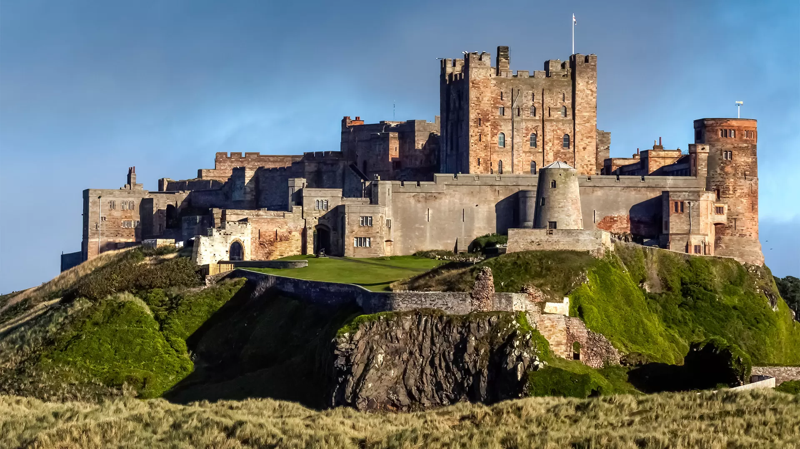

About Bamburgh Castle
Bamburgh Castle is a famous medieval fortress located on the northeast coast of England. Standing on a rocky plateau overlooking the North Sea, the castle has a history that dates back over 1,400 years to the Anglo-Saxon kingdom of Northumbria. The current structure was largely restored in the 19th century by industrialist William Armstrong.
Today, Bamburgh Castle is open to visitors and features grand state rooms, historic weapons and armor collections, and exhibitions about the castle's long history. The castle also offers breathtaking views of Bamburgh Beach and the surrounding coastline, making it one of the most iconic landmarks in England.
Quick Facts
- Location: Bamburgh, Northumberland, England
- Coordinates: 55.6084, -1.7090
- Founded: Around the 6th century
- Type: Medieval castle and historic museum
- Famous for: Coastal views and Anglo-Saxon history
- Open to the public?: Yes, open to tourists
Note when going here
Visitors should be prepared for some walking when exploring the castle grounds and interior rooms. Comfortable footwear is recommended. The castle can become busy during peak tourist seasons, especially in the summer months. Photography is usually allowed, and visitors can enjoy spectacular views of the North Sea and Bamburgh Beach from the castle walls.
Visitor Comments
No comments yet. Be the first!